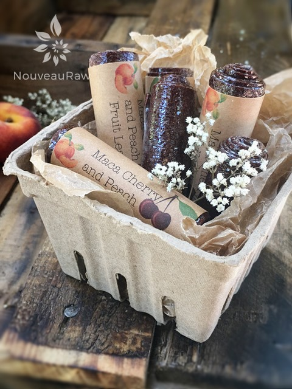

Maca Cherry and Peach Fruit Leather

~ raw, vegan, gluten-free, nut-free ~
Many of you are well aware of the superfood product called Maca, but I thought it would be beneficial to share a little bit of information on the health benefits of it for those who are not aware of this product. There are many ways that Maca powder can benefit you, here are a few ways but not limited to:
- Increases endurance, Alleviation of chronic fatigue
- Relief of menstrual symptoms. Reduce of hormonal disorders during menopause
- Regulation of hormonal balance in the body
- Treatment of anemia
- Improvement of memory, mental and academic abilities
- Providing the skin a youthful look
- Contributing to healthy bones and teeth
- Acts as an anticarcinogen and antioxidant
- A positive effect on increasing muscle mass, and by many athletes as an alternative to synthetic steroids that are known that can have many side effects
With all that said, I decided to amp up this recipe by sliding in a little bit of this amazing food into it. I have used maca in many of my smoothie recipes as well, which can give it a malted flavor. I encourage you to give Maca a try and see if helps you in your day-to-day performance. Blessings!
Ingredients:
yields 5 cups = 2 / 12″x12″ leathers
- 6 cups chopped, organic peaches
- 1 cup organic cherries, pits removed (I used Bing)
- 2 Tbsp chia seeds, ground in a spice grinder
- 1 Tbsp maca powder
- 1 tsp vanilla extract
Preparation:
- Select RIPE or slightly overripe peaches and cherries that have reached a peak in color, texture, and flavor.
- Prepare the peaches; wash, dry, remove stems, and stones.
- Puree the fruit, ground chia, maca, and vanilla, in the blender or food processor until smooth. Taste and sweeten more if needed. Keep in mind that flavors will intensify as they dehydrate. When adding a sweetener do so a little at a time, and reblend, tasting until it is at the desired taste. It is best to use a liquid type sweetener. Don’t use granulated sugar because it tends to change the texture.
- Allow the puree to sit for 10 minutes, so the chia has time to thicken the puree.
- Spread the fruit puree on teflex sheets that come with your dehydrator. Pour the puree to create an even depth of 1/8 to 1/4 inch. If you don’t have teflex sheets for the trays, you can line your trays with plastic wrap or parchment paper. Do not use wax paper or aluminum foil.
- Lightly coat the food dehydrator plastic sheets or wrap with a cooking spray, I use coconut oil that comes in a spray.
- When spreading the puree on the liner, allow about an inch of space between the mixture and the outside edge. The fruit leather mixture will spread out as it dries, so it needs a little room to allow for this expansion.
- Be sure to spread the puree evenly on your drying tray. When spreading the puree mixture, try tilting and shaking the tray to help it distribute more evenly. Also, it is a good idea to rotate your trays throughout the drying period. This will help assure that the leathers dry evenly.
- Dehydrate the fruit leather at 145 degrees (F) for 1 hour, reduce temp to 115 degrees (F) and continue drying for about 16 (+/-) hours. The finished consistency should be pliable and easy to roll.
- Check for dark spots on top of the fruit leather. If dark spots can be seen it is a sign that the fruit leather is not completely dry.
- Press down on the fruit leather with a finger. If no indentation is visible or if it is no longer tacky to the touch, the fruit leather is dry and can be removed from the dehydrator.
- Peel the leather from the dehydrator trays or parchment paper. If it peels away easily and holds its shape after peeling, it is dry. If it is still sticking or loses its shape after peeling, it needs further drying.
- Under-dried fruit leather will not keep; it will mold. Over-dried fruit leather will become hard and crack, although it will still be edible and will keep for a long time
- Storage: To store the finished fruit leather…
- Allow the leather to cool before wrapping up to avoid moisture from forming, thus giving it a breeding ground for molds.
- Roll them up and wrap them tightly with plastic wrap. Click (here) to see photos of how I wrap them.
- Place in an air-tight container, and store in a dry, dark place. (Light will cause the fruit leather to discolor.)
- The fruit leather will keep at room temperature for one month, or in a freezer for up to one year.
Culinary Explanations:
- Why do I start the dehydrator at 145 degrees (F)? Click (here) to learn the reason behind this.
- When working with fresh ingredients, it is important to taste test as you build a recipe. Learn why (here).
- Don’t own a dehydrator? Learn how to use your oven (here). I do however truly believe that it is a worthwhile investment. Click (here) to learn what I use.
© AmieSue.com